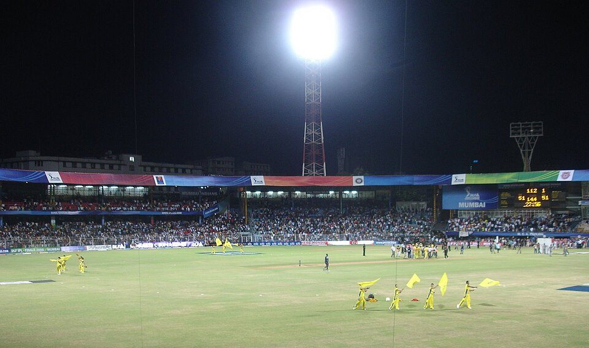
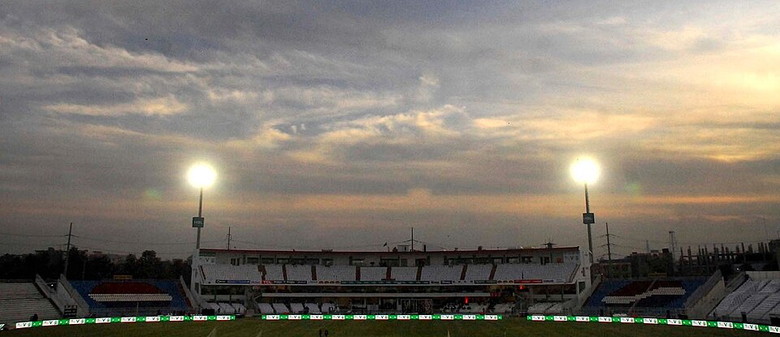
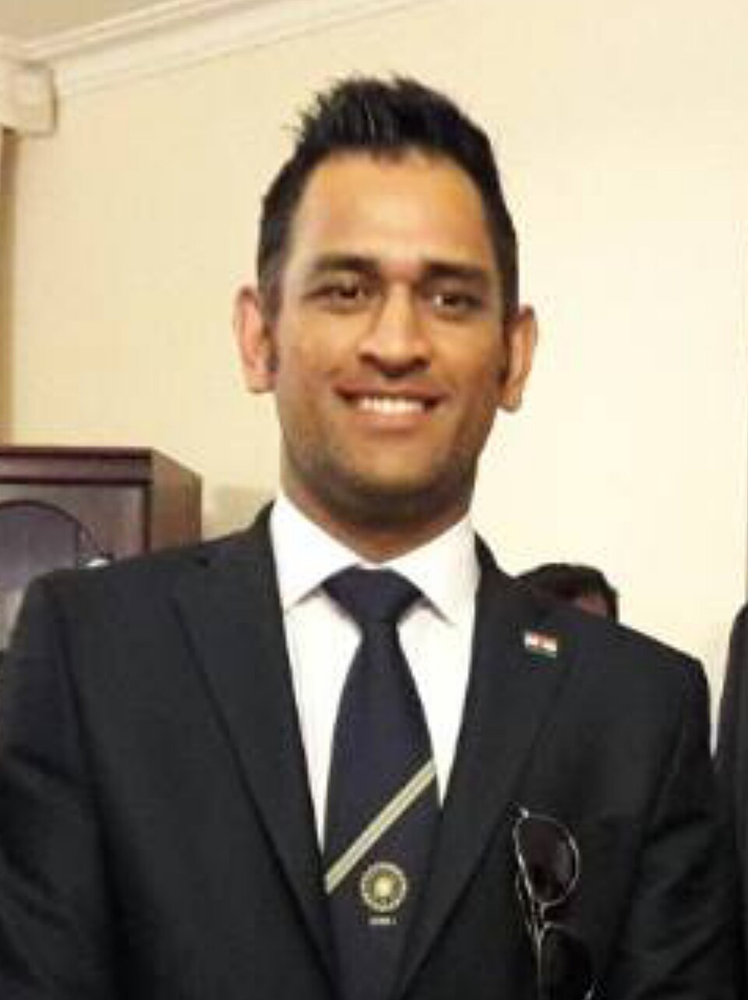

खेल
 खेल
खेलएशिया कप राइजिंग स्टार्स: भारत ने नेपाल को 306 रन से हराया
भारत ने एशिया कप राइजिंग स्टार्स 2026 के अपने पहले मुकाबले में नेपाल को 306 रन के बड़े अंतर से मात दी। नेपाल की पूरी टीम महज 26 रन पर सिमट गई।
 खेल
खेलराइजिंग स्टार्स एशिया कप: तिलक वर्मा और कुमार कुशाग्र के शतकों से मजबूत स्थिति में इंडिया ए
राइजिंग स्टार्स एशिया कप में नेपाल के खिलाफ मुकाबले में इंडिया ए के कप्तान तिलक वर्मा और कुमार कुशाग्र ने शानदार शतक जड़े। शुरुआती झटकों के बाद दोनों बल्लेबाजों ने टीम को संभाला।
 खेल
खेलकेएल राहुल ने रचा इतिहास, SENA देशों में 50+ स्कोर बनाने वाले पहले भारतीय ओपनर बने
न्यूजीलैंड के खिलाफ वेलिंगटन टेस्ट में केएल राहुल ने सभी SENA देशों में टेस्ट क्रिकेट में 50 से अधिक का स्कोर बनाने वाले पहले भारतीय ओपनिंग बल्लेबाज बनकर नया इतिहास रच दिया है।
 खेल
खेलसैंडपेपरगेट विवाद: दक्षिण अफ्रीका के पूर्व कप्तान फैनी डिविलियर्स ने उस्मान ख्वाजा को बताया गद्दार
सैंडपेपरगेट बॉल टेम्परिंग विवाद में दक्षिण अफ्रीका के पूर्व कप्तान फैनी डिविलियर्स ने उस्मान ख्वाजा की आलोचना करते हुए उन्हें गद्दार करार दिया है। ख्वाजा की आत्मकथा आने के बाद यह विवाद फिर गहरा गया है।
 खेल
खेलयशस्वी जायसवाल और केएल राहुल ने न्यूजीलैंड में रचा इतिहास, 32 साल बाद ओपनिंग साझेदारी
न्यूजीलैंड के खिलाफ वेलिंगटन टेस्ट के दूसरे दिन यशस्वी जायसवाल और केएल राहुल ने शानदार बल्लेबाजी करते हुए शतकीय साझेदारी की। भारत की पहली पारी एक विकेट पर 159 रन पर है।
खेलभारत-न्यूजीलैंड पहला टेस्ट: दूसरे दिन भारत का दबदबा, राहुल और जायसवाल का शानदार प्रदर्शन
वेलिंगटन टेस्ट के दूसरे दिन स्टंप्स तक भारत ने एक विकेट पर 159 रन बना लिए हैं। न्यूजीलैंड की पहली पारी 368 रनों पर सिमटी, जिसके जवाब में यशस्वी जायसवाल और केएल राहुल ने अर्धशतक जड़े।
खेलआईपीएल से मुकाबला करना भूल, पीएसएल टीम बेचने पर विचार कर रहे मालिक
पाकिस्तान सुपर लीग की फ्रेंचाइजी क्वेटा ग्लैडिएटर्स के मालिक नदीम उमर ने स्वीकार किया है कि पीएसएल व्यावसायिक रूप से आईपीएल का मुकाबला नहीं कर सकता है। उन्होंने बेहतर प्रस्ताव मिलने पर टीम बेचने की इच्छा जताई है।
खेलएशिया कप राइजिंग स्टार्स: भारत ए और नेपाल के बीच दोहा में मुकाबला शुरू
राइजिंग स्टार्स एशिया कप में भारत ए और नेपाल की टीमें आमने-सामने हैं। नेपाल के कप्तान ने टॉस जीतकर पहले गेंदबाजी करने का फैसला किया है।
खेलभारत-न्यूजीलैंड टेस्ट: दूसरे दिन का खेल शुरू, पहली पारी में मजबूत स्थिति में कीवी टीम
भारत और न्यूजीलैंड के बीच खेले जा रहे टेस्ट मैच के दूसरे दिन का खेल शुरू हो गया है। न्यूजीलैंड की टीम ने अपनी पहली पारी में पांच विकेट पर 243 से अधिक रन बना लिए हैं।
खेलराइजिंग स्टार्स एशिया कप: नेपाल के खिलाफ आज होगा इंडिया ए का पहला मुकाबला
राइजिंग स्टार्स एशिया कप में तिलक वर्मा की कप्तानी वाली इंडिया ए टीम आज नेपाल के खिलाफ अपने अभियान की शुरुआत करेगी। दोहा में खेले जाने वाले इस वनडे टूर्नामेंट में कई युवा खिलाड़ियों पर नजरें रहेंगी।
 खेल
खेलयुजवेंद्र चहल ने टी20 क्रिकेट में पूरे किए 400 विकेट, ऐसा करने वाले पहले भारतीय गेंदबाज बने
भारत के लेग स्पिनर युजवेंद्र चहल ने टी20 क्रिकेट में 400 विकेट का आंकड़ा पार कर लिया है। वह इस मुकाम पर पहुंचने वाले पहले भारतीय गेंदबाज बन गए हैं।

खेलएमएस धोनी के आईपीएल मेंटॉर बनने पर वीरेंद्र सहवाग का बड़ा बयान
पूर्व भारतीय क्रिकेटर वीरेंद्र सहवाग का कहना है कि आईपीएल 2027 में चेन्नई सुपर किंग्स के मेंटॉर की भूमिका संभालने के बाद एमएस धोनी पर टीम के प्रदर्शन और संयोजन को लेकर अधिक दबाव रहेगा।
 खेल
खेलजसप्रीत बुमराह टेस्ट क्रिकेट में भारत के 10वें सबसे ज्यादा विकेट लेने वाले गेंदबाज बने
तेज गेंदबाज जसप्रीत बुमराह ने वेलिंगटन टेस्ट में टॉम ब्लंडेल को आउट कर जवागल श्रीनाथ का रिकॉर्ड पीछे छोड़ा। वह भारत के लिए टेस्ट में 10वें सबसे सफल गेंदबाज बन गए हैं।
खेलमोहम्मद सिराज का 2027 वनडे वर्ल्ड कप खेलना मुश्किल: रविचंद्रन अश्विन का दावा
भारतीय स्पिनर रविचंद्रन अश्विन ने दावा किया है कि तेज गेंदबाज मोहम्मद सिराज को आगामी 2027 वनडे वर्ल्ड कप से बाहर किया जा सकता है। उन्होंने टीम से लगातार नजरअंदाज किए जाने का हवाला दिया।
 खेल
खेलदक्षिण अफ्रीका बांग्लादेश को हराकर WTC प्वाइंट्स टेबल में शीर्ष पर पहुंचा
दक्षिण अफ्रीका ने जोहान्सबर्ग टेस्ट में बांग्लादेश को 9 विकेट से हराकर वर्ल्ड टेस्ट चैंपियनशिप की अंक तालिका में पहला स्थान हासिल कर लिया है। सीरीज में अफ्रीका ने 1-0 की बढ़त बना ली है।
 खेल
खेलभारत के खिलाफ टेस्ट मैच में न्यूजीलैंड की मजबूत स्थिति, बेसिन रिजर्व में खेल
भारत और न्यूजीलैंड के बीच बेसिन रिजर्व में खेले जा रहे पहले टेस्ट मैच के शुरुआती दिन न्यूजीलैंड ने शुरुआती झटकों के बाद संभलते हुए मजबूत स्थिति बनाई।
खेलवनडे वर्ल्ड कप 2023 फाइनल की तीसरी सालगिरह पर ट्रेविस हेड के पोस्ट से फैंस में चर्चा
ऑस्ट्रेलियाई बल्लेबाज ट्रेविस हेड ने 2023 वनडे वर्ल्ड कप फाइनल की तीसरी सालगिरह पर सोशल मीडिया पर तस्वीरें साझा कीं, जिसके बाद भारतीय फैंस की पुरानी यादें ताजा हो गईं।
खेलमोहम्मद सिराज को पहले टेस्ट से बाहर रखने पर गावस्कर और शास्त्री ने उठाए सवाल
न्यूज़ीलैंड के खिलाफ पहले टेस्ट मैच की प्लेइंग इलेवन में तेज गेंदबाज मोहम्मद सिराज को शामिल न किए जाने पर सुनील गावस्कर और रवि शास्त्री समेत कई दिग्गजों ने हैरानी जताई है।
खेलराइजिंग स्टार्स एशिया कप 2026 शुरू, तिलक वर्मा संभालेंगे इंडिया-ए की कमान
राइजिंग स्टार्स एशिया कप 2026 की शुरुआत हो गई है। 50 ओवरों के इस टूर्नामेंट में 8 टीमें हिस्सा ले रही हैं, और इंडिया-ए टीम की कप्तानी तिलक वर्मा कर रहे हैं।

खेलपाकिस्तान क्रिकेट टीम ने एक साल में टेस्ट क्रिकेट में सबसे ज्यादा नो-बॉल फेंकी
पाकिस्तान की क्रिकेट टीम ने एक कैलेंडर वर्ष में सबसे ज्यादा नो-बॉल फेंकने का अनचाहा रिकॉर्ड अपने नाम कर लिया है। इस साल 9 टेस्ट मैचों में पाकिस्तानी गेंदबाजों ने 106 नो-बॉल फेंकी हैं।
खेलIPL 2027: जैकब बेथेल और मिचेल स्टार्क समेत तीन खिलाड़ियों ने नाम लिया वापस
आईपीएल 2027 के आगामी सीजन से जैकब बेथेल, ट्रेविस हेड और मिचेल स्टार्क ने अपना नाम वापस ले लिया है। नीलामी का आयोजन 16 दिसंबर को गोवा में किया जाना है।
खेलमोहम्मद सिराज को बाहर रखने पर भारतीय कोच सितांशु कोटक का बयान
न्यूजीलैंड के खिलाफ टेस्ट मैच में मोहम्मद सिराज को प्लेइंग 11 से बाहर रखने पर उठे सवालों के बीच भारतीय बल्लेबाजी कोच सितांशु कोटक ने फैसले का बचाव किया है।
 खेल
खेलमोहम्मद सिराज को प्लेइंग इलेवन से बाहर करने पर सुनील गावस्कर ने जताई नाराजगी
भारतीय टीम के पहले टेस्ट मैच की प्लेइंग इलेवन में तेज गेंदबाज मोहम्मद सिराज को शामिल नहीं किए जाने पर दिग्गज क्रिकेटर सुनील गावस्कर ने हैरानी और नाराजगी जताई है।
खेलवाराणसी अंतरराष्ट्रीय क्रिकेट स्टेडियम का निर्माण लगभग पूरा, जय शाह ने किया निरीक्षण
आईसीसी अध्यक्ष जय शाह और बीसीसीआई सचिव देवजीत सैकिया ने वाराणसी के नए अंतरराष्ट्रीय क्रिकेट स्टेडियम का निरीक्षण किया। ₹450 करोड़ की लागत से बने इस स्टेडियम में दिसंबर में मैच होने की संभावना है।
खेलभारत-न्यूजीलैंड पहला टेस्ट: बुमराह की घातक गेंदबाजी से न्यूजीलैंड की आधी टीम 70 रन पर ढेर
वेलिंगटन टेस्ट में भारत के खिलाफ न्यूजीलैंड की शुरुआत बेहद खराब रही है। तेज गेंदबाज जसप्रीत बुमराह के तीन विकेट की बदौलत मेजबान टीम ने 70 रन पर अपने पांच विकेट गंवा दिए हैं।
खेलभारत-न्यूजीलैंड पहला टेस्ट: शुरुआती झटकों के बाद कीवी टीम ने संभाला मोर्चा
वेलिंगटन टेस्ट के पहले दिन भारतीय गेंदबाजों ने शुरुआती सत्र में शानदार प्रदर्शन करते हुए न्यूजीलैंड के 5 विकेट मात्र 70 रन पर गिरा दिए, जिसके बाद कीवी बल्लेबाजों ने वापसी की कोशिश की।
 खेल
खेलधीमी ओवर गति के कारण टीम इंडिया पर लगा जुर्माना, आईसीसी ने की कार्रवाई
न्यूजीलैंड के खिलाफ पांचवें वनडे में धीमी ओवर गति के लिए आईसीसी ने भारतीय टीम पर मैच फीस का 35 प्रतिशत जुर्माना लगाया है। स्टैंड-इन कप्तान श्रेयस अय्यर ने सजा स्वीकार कर ली है।

खेलएमएस धोनी के आईपीएल संन्यास पर सचिन तेंदुलकर ने दी प्रतिक्रिया
सचिन तेंदुलकर ने एमएस धोनी के आईपीएल संन्यास पर प्रतिक्रिया देते हुए उनकी पावर हिटिंग और शानदार करियर की सराहना की। चेन्नई सुपर किंग्स ने हाल ही में धोनी के मेंटॉर बनने का ऐलान किया था।